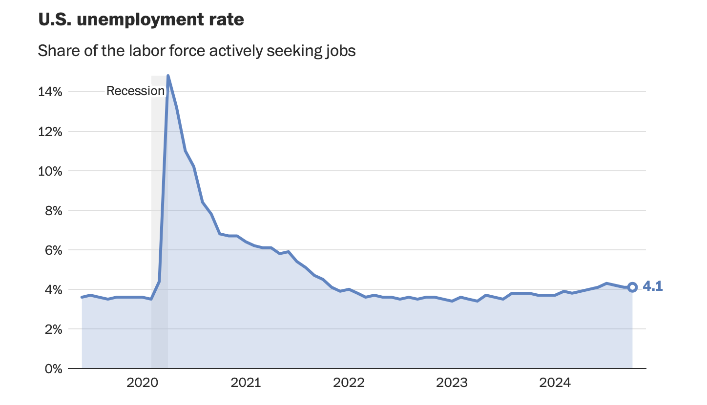

It is discussed that UK economy has been under-performing, especially with low productivity since 2007.
It is shown that there is slightly decreasing pattern for productivity since 2007.
Despite the sharp drop in 2020, GDP growth has been able to reach its previous rate for post-2007 without substantial decrease.
The line chart obtained from "Washington Post" illustrates the unemployment rate in the U.S for the last 5 years.
Replicated chart:
Improved chart: In order to visualize better, the months were added on the x-axis, and the color shade was darkened to show the pattern better.
To analyse the relevance of education policies, I obtained data from Wikipedia about school leaving age in a descending order for countries in Africa: Colab Notebook
The data is retrieved from ONS based on the 9 labour productivity time series: Colab Notebook
Map 1: The given chart illustrates the map of Germany consisting of 16 states.
Map 2 (Point Map): The updated chart illustrates the map of 16 German states with relevant population statistics.
Both charts were generated in Google Colab using data from LRPD. Firstly, I merged the prices and items in Colab, through which I filtered data for 75 cl wine. While the bar chart illustrates the difference in five wine prices, line chart shows price trend for January 2022 onwards.
Note: This chart was created before the last recap session. Colab Notebook